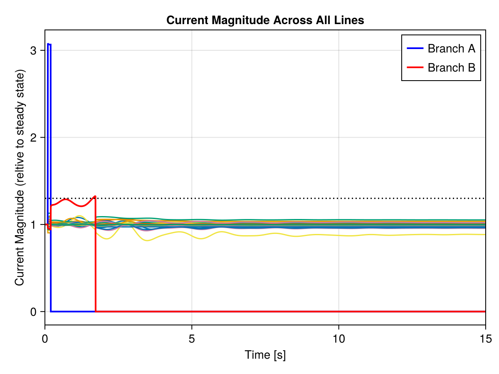
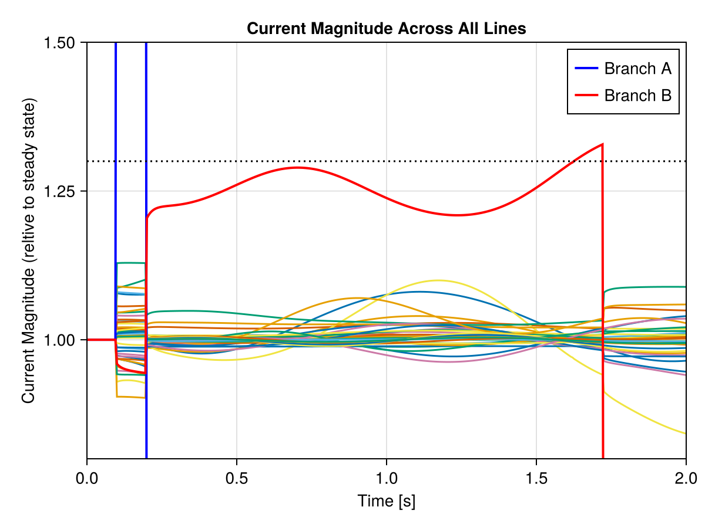

Tutorial on custom Transmission Line Models
This tutorial can be downloaded as a normal Julia script here.
In this tutorial we'll implement a custom transmission line model:
- we start by defining a PI-branch component with optional fault admittance,
- we combine two PI-branch components into one MTKLine, to essentially model a dual-branch transmission line.
To make it more interesting, we add protection logic to the branches:
- each branch continuously checks the current magnitude against a limit,
- if the current exceeds the limit, the branch is switched off after a delay time.
using PowerDynamics
using ModelingToolkit
using ModelingToolkit: D_nounits as Dt, t_nounits as t
using NetworkDynamics
using OrdinaryDiffEqRosenbrock
using OrdinaryDiffEqNonlinearSolve
using CairoMakie
using GraphsBasic PI-Branch Model
We start by defining a basic PI-branch model, which is similar to the one in PiLine_fault.jl as an MTKModel. This model should fulfill the Branch Interface, i.e. it needs to have two Terminal, one called :src the other called :dst:
┌───────────┐
(src) │ │ (dst)
o←──┤ Branch ├──→o
│ │
└───────────┘The PI-branch we want to describe looks like this. We have:
- two terminals
:srcand:dstwith their- voltages $V_\mathrm{src}$ and $V_\mathrm{dst}$,
- currents $i_\mathrm{src}$ and $i_\mathrm{dst}$,
- two shunt admittances $Y_\mathrm{src}$ and $Y_\mathrm{dst}$,
- an impedance $Z$, which is split into two parts $Z_a$ and $Z_b$ by the fault position $\mathrm{pos}$.
i_src V₁ i_a Vₘ i_b V₂ i_dst
V_src o────←────o───Z_a─→──o───Z_b─→──o────→────o V_dst
r_src │ │ │ r_dst
↓ i₁ ↓ i_f i₂ ↓
┴ ┴ ┴
Y_src = G_src+jB_src ┬ ┬ Y_f ┬ Y_dst = G_dst+jB_dst
│ │ │
⏚ ⏚ ⏚
(fault enabled by breaker)The fault admittance $Y_f = G_f + jB_f$ can represent any fault impedance.
To model this, we introduce the internal voltages $V_1$, $V_2$ and $V_\mathrm{m}$. We consider the equations of the PI-branch in quasi-static-state. Therefore, we can use complex variables to describe the voltages and the currents. What we need in the end are equations for the currents at the terminals, i.e. $i_\mathrm{src}$ and $i_\mathrm{dst}$ as a function of all the parameters and the given node voltages. Lets start writing down the equations:
First, we "split" the impedance $Z$ into two parts $Z_a$ and $Z_b$:
\[\begin{aligned} Z_\mathrm{a} &= Z \, \mathrm{pos}\\ Z_\mathrm{b} &= Z \, (1-\mathrm{pos}) \end{aligned}\]
Next, we can define the internal voltages $V_1$ and $V_2$ in terms of the terminal voltages and the transformation ratios:
\[\begin{aligned} V_1 &= r_\mathrm{src} \, V_\mathrm{src}\\ V_2 &= r_\mathrm{dst} \, V_\mathrm{dst} \end{aligned}\]
Once we have the shunt voltages, we can directly calculate the shunt currents
\[\begin{aligned} i_1 &= Y_\mathrm{src} \, V_1\\ i_2 &= Y_\mathrm{dst} \, V_2 \end{aligned}\]
To calculate the middle voltage $V_\mathrm{m}$, we need to consider the fault admittance $Y_f$. The fault admittance is defined as:
\[Y_f = G_f + jB_f\]
The effective fault admittance is controlled by the shortcircuit parameter:
\[Y_{f,\text{eff}} = \mathrm{shortcircuit} \cdot Y_f\]
When the fault is active, we apply Kirchhoff's current law at the middle node: $i_\mathrm{a} = i_\mathrm{b} + i_f$, which leads to the middle voltage:
\[V_\mathrm{m} = \frac{V_1 \, (1-\mathrm{pos}) + V_2 \, \mathrm{pos}}{1 + Y_{f,\text{eff}} \, Z \, \mathrm{pos} \, (1-\mathrm{pos})}\]
Once we have the middle voltage defined, we can calculate the currents $i_\mathrm{a}$, $i_\mathrm{b}$, and $i_f$:
\[\begin{aligned} i_\mathrm{a} &= \frac{V_1 - V_\mathrm{m}}{Z_a}\\ i_\mathrm{b} &= \frac{V_\mathrm{m} - V_2}{Z_b}\\ i_f &= Y_{f,\text{eff}} \, V_\mathrm{m} \end{aligned}\]
Finally, we can calculate the terminal currents using Kirchhoff law and the transformation ratios:
\[\begin{aligned} i_\mathrm{src} &= (-i_\mathrm{a} - i_1) \, r_\mathrm{src}\\ i_\mathrm{dst} &= (i_\mathrm{b} - i_2) \, r_\mathrm{dst} \end{aligned}\]
Implement the CustomPiBranch MTKModel
Excursion: Complex Variables in MTK Models
In the end, all parameters and variables of NetworkDynamic models are real-valued, therefore, we cannot use complex parameters or states in our MTK Models.
However, there is a "hack" to prevent this issue. Lets say we want to model the complex equation
\[U = Z \cdot I\]
We could expand everything in real and imaginary parts and rewrite the equations. However, we can also use ModelingToolkits capability to have complex terms even without having complex variables.
@variables u_r u_i i_r i_i
@parameters R, X
Ic = i_r + im * i_i\[ \begin{equation} \mathtt{i_{r}} + \mathtt{i_{i}} \mathit{i} \end{equation} \]
Z = R + im * X\[ \begin{equation} R + X \mathit{i} \end{equation} \]
Here, Ic and Z are not a symbolic variables, they are julia variables which points to a complex term/expression.
Using Symboics/ModelingToolkit, we can also multiply complex terms:
Uc = Z * Ic\[ \begin{equation} R \mathtt{i_{r}} - X \mathtt{i_{i}} + \left( R \mathtt{i_{i}} + X \mathtt{i_{r}} \right) \mathit{i} \end{equation} \]
By applying real and imag to the complex term, we can extract the real and imaginary parts to form separate equations for real and imaginary part:
eqs = [
u_r ~ real(Uc),
u_i ~ imag(Uc)
]\[ \begin{align} \mathtt{u\_r} &= R \mathtt{i\_r} - X \mathtt{i\_i} \\ \mathtt{u\_i} &= R \mathtt{i\_i} + X \mathtt{i\_r} \end{align} \]
This trick can be used inside @mtkmodel as well, by just defining those complex terms in a begin...end block.
With the equations and the knowledge on how to use complex terms within MTK Models the definition is relatively straight forward:
@mtkmodel CustomPiBranch begin
@parameters begin
R, [description="Resistance of branch in pu"]
X, [description="Reactance of branch in pu"]
G_src, [description="Conductance of src shunt"]
B_src, [description="Susceptance of src shunt"]
G_dst, [description="Conductance of dst shunt"]
B_dst, [description="Susceptance of dst shunt"]
r_src=1, [description="src end transformation ratio"]
r_dst=1, [description="dst end transformation ratio"]
# fault parameters
pos=0.5, [description="Fault Position (from src, percent of the line)"]
G_f=1, [description="Fault conductance in pu"]
B_f=0, [description="Fault susceptance in pu"]
shortcircuit=0, [description="shortcircuit on line"]
# parameter to "switch off" the line
active=1, [description="Line active or switched off"]
end
@components begin
src = Terminal()
dst = Terminal()
end
begin
# define complex variables
Z = R + im*X
Ysrc = G_src + im*B_src
Ydst = G_dst + im*B_dst
Yf = G_f + im*B_f
Vsrc = src.u_r + im*src.u_i
Vdst = dst.u_r + im*dst.u_i
# define Z_a and Z_b in terms of Z
Z_a = Z * pos
Z_b = Z * (1-pos)
# define internal voltages using the
V₁ = r_src * Vsrc
V₂ = r_dst * Vdst
# currents through the shunt admittances
i₁ = Ysrc * V₁
i₂ = Ydst * V₂
# effective fault admittance (controlled by shortcircuit)
Yf_eff = shortcircuit * Yf
# middle voltage with fault admittance effect
V_m = (V₁*(1-pos) + V₂*pos) / (1 + Yf_eff * Z * pos * (1-pos))
# fault current to ground
i_f = Yf_eff * V_m
# current through the two Z parts
i_a = (V₁ - V_m) / Z_a
i_b = (V_m - V₂) / Z_b
# terminal currents
isrc = (-i_a - i₁)*r_src
idst = (i_b - i₂)*r_dst
end
@equations begin
src.i_r ~ active * real(isrc)
src.i_i ~ active * imag(isrc)
dst.i_r ~ active * real(idst)
dst.i_i ~ active * imag(idst)
end
endAdditionally to the equations defined above, we multiply the currents by active. This is equivalent of opening two ideal breakers on both ends of the branch when active=false.
Lastly lets ensure that our model satisfies the Branch Interface:
@named pibranch = CustomPiBranch()
isbranchmodel(pibranch)trueExtending the model for dynamic over-current Protection
Now that we have a working basic PI-branch model, let's extend it with dynamic protection capabilities.
In order to implement the overcurrent protection, we need to make a plan in terms of callbacks. Callbacks are a neat feature of DifferentialEquations.jl, which allow you to stop the solver under certain conditions and trigger a user-defined affect function to change the state of the system. Their general capability is extended in NetworkDynamics.
We want to implement the following behavior:
- Continuously monitor the current magnitude and compare to the maximal current threshold.
- If the maximum current is reached at time $t$, mark the line as to be switched off at time $t_\mathrm{cutoff} = t + \Delta t$.
- Continuously monitor time of the simulation and switch off the line at $t_\mathrm{cutoff}$.
The way to implement this is by introducing 3 new parameters:
I_max, the maximum current magnitude,t_cutoff=Inf, the time when the line should be switched off, which defaults to infinity andt_delay, the delay time after which the line should be switched off.
For robust overcurrent protection, we need to implement multiple complementary callbacks:
- A continuous callback that detects smooth threshold crossings using root-finding
- A discrete callback that catches instantaneous jumps above the threshold
- A cutoff callback that switches off the line at the scheduled time
This dual detection approach is necessary because discrete events (like short circuits) can cause the current to jump above the threshold without crossing it smoothly, which continuous callbacks might miss. Both overcurrent callbacks share the same affect function that schedules the line cutoff, while the cutoff callback actually switches off the line.
NetworkDynamics currently does not support Events defined in MTK models. So we need to split the implementation: The new parameters need to be introduced to the MTKModel (extending CustomPiBranch), the callbacks need to be defined for the compiled EdgeModel.
Extension of the CustomPiBranch MTKModel
Let's add the new parameters to the CustomPiBranch model by extending the model. Extend means that we essentially copy-paste the whole model definitions and are able to add new parameters, equations, variables and so on.
We add an additional "observed" state I_mag, which always contains the current magnitude at the src or dst terminal (whatever is higher).
@mtkmodel ProtectedPiBranch begin
@extend CustomPiBranch()
@parameters begin
I_max=Inf, [description="Maximum current magnitude"]
t_cutoff=Inf, [description="Time when the line should be switched off"]
t_delay=0.1, [description="Delay time after which the line should be switched off"]
end
@variables begin
I_mag(t), [description="Current magnitude at src or dst terminal"]
end
@equations begin
I_mag ~ max(sqrt(src.i_r^2 + src.i_i^2), sqrt(dst.i_r^2 + dst.i_i^2))
end
endOnce the model is defined, we can go through the building hierarchy outlined in Modeling Concepts. First, we need to form something satisfying the MTKLine Interface.
Creating the Dual-Branch MTKLine
Here we implement our dual-branch architecture by creating two separate ProtectedPiBranch instances and combining them into a single MTKLine. This creates a transmission line model with two parallel branches:
┌───────────────────────────────────────────┐
│MTKLine ┌─────────────────────┐ │
│ ┌┤ ProtectedPiBranch A ├┐ │
│┌───────┐│└─────────────────────┘│┌───────┐│
││LineEnd├o o┤LineEnd││
│└───────┘│┌─────────────────────┐│└───────┘│
│ :src └┤ ProtectedPiBranch B ├┘ :dst │
│ └─────────────────────┘ │
└───────────────────────────────────────────┘The end terminals of both branches are connected to the same physical line end. However, the branches operate independently:
- Each branch monitors its own current magnitude (
pibranchA₊I_mag,pibranchB₊I_mag) - Each has independent protection parameters (
I_max,t_delay,t_cutoff) - Each can be individually switched off (
pibranchA₊active,pibranchB₊active) - Electrical parameters are adjusted so that parallel combination matches the original single-branch behavior
branchA = ProtectedPiBranch(; name=:pibranchA)
branchB = ProtectedPiBranch(; name=:pibranchB)
mtkline = MTKLine(branchA, branchB)Then, we take the mtkline and put it into a compiled EdgeModel by calling the compile_line constructor
╔═══════════════════════════════════════════════╗
║ EdgeModel (compiled) ║
║ ┌───────────────────────────────────────────┐ ║
src ║ │MTKLine ┌─────────────────────┐ │ ║ dst
vertex ║ │ ┌┤ ProtectedPiBranch A ├┐ │ ║ vertex
u ───→│┌───────┐│└─────────────────────┘│┌───────┐│←─── u
║ ││LineEnd├o o┤LineEnd││ ║
i ←───│└───────┘│┌─────────────────────┐│└───────┘│───→ i
║ │ :src └┤ ProtectedPiBranch B ├┘ :dst │ ║
║ │ └─────────────────────┘ │ ║
║ └───────────────────────────────────────────┘ ║
╚═══════════════════════════════════════════════╝protected_template = compile_line(mtkline; name=:protected_piline)EdgeModel :protected_piline PureFeedForward()
├─ 2/2 inputs: src=[src₊u_r, src₊u_i] dst=[dst₊u_r, dst₊u_i]
├─ 0 states: []
├─ 2/2 outputs: src=[src₊i_r, src₊i_i] dst=[dst₊i_r, dst₊i_i]
└─ 32 params: [pibranchA₊R, pibranchA₊X, pibranchA₊G_src, pibranchA₊B_src, pibranchA₊G_dst, pibranchA₊B_dst, pibranchA₊r_src=1, pibranchA₊r_dst=1, pibranchA₊pos=0.5, pibranchA₊G_f=1, pibranchA₊B_f=0, pibranchA₊shortcircuit=0, pibranchA₊active=1, pibranchA₊I_max=Inf, pibranchA₊t_cutoff=Inf, pibranchA₊t_delay=0.1, pibranchB₊R, pibranchB₊X, pibranchB₊G_src, pibranchB₊B_src, pibranchB₊G_dst, pibranchB₊B_dst, pibranchB₊r_src=1, pibranchB₊r_dst=1, pibranchB₊pos=0.5, pibranchB₊G_f=1, pibranchB₊B_f=0, pibranchB₊shortcircuit=0, pibranchB₊active=1, pibranchB₊I_max=Inf, pibranchB₊t_cutoff=Inf, pibranchB₊t_delay=0.1]Note, that the compiled model still has no states, i.e. it directly calculates the terminal currents from the terminal voltages and the parameters. This is a perfect showcase of why equation based modeling matters: we still can access all of the internal variables, like the currents per branch. However those are all just "observed" and don't add to the numeric dimensionality of our model. (Even though the complexity of calculating the output currents is slightly higher than that of the simple PI-Line model).
Definition of the Callbacks
We implement the callbacks as outlined in the NetworkDynamic docs on Callbacks.
For robust overcurrent protection, we need two complementary callbacks:
- A continuous callback that detects smooth threshold crossings using root-finding
- A discrete callback that catches instantaneous jumps above the threshold
This dual approach is necessary because discrete events (like short circuits) can cause the current to jump above the threshold without crossing it smoothly, which continuous callbacks might miss.
Overcurrent Detection Callbacks
For ComponentCondition, we need to specify which symbols to monitor. We've explicitly added I_mag as an observed state to our ProtectedPiBranch model, which contains the maximum current magnitude between the src and dst terminals for each branch.
Since our dual-branch transmission line has two independent branches (:pibranchA and :pibranchB), we define callback functions that take the branch name as a parameter. This allows us to automatically create identical callbacks for both branches without code duplication.
Condition Definitions:
The continuous condition uses root-finding, returning the difference between limit and current magnitude (zero when the limit is reached):
function continuous_overcurrent_condition(branchname)
I_mag = Symbol(branchname, "₊", :I_mag) # pilineX₊I_mag
I_max = Symbol(branchname, "₊", :I_max) # pilineX₊I_max
t_cutoff = Symbol(branchname, "₊", :t_cutoff) # pilineX₊t_cutoff
ComponentCondition([I_mag], [I_max, t_cutoff]) do u, p, t
p[t_cutoff] != Inf && return Inf # return Inf if cutoff already scheduled
p[I_max] - u[I_mag]
end
endThe discrete condition uses a boolean check that triggers whenever the current exceeds the threshold:
function discrete_overcurrent_condition(branchname)
I_mag = Symbol(branchname, "₊", :I_mag) # pilineX₊I_mag
I_max = Symbol(branchname, "₊", :I_max) # pilineX₊I_max
t_cutoff = Symbol(branchname, "₊", :t_cutoff) # pilineX₊t_cutoff
ComponentCondition([I_mag], [I_max, t_cutoff]) do u, p, t
p[t_cutoff] != Inf && return false # return false if cutoff already scheduled
u[I_mag] ≥ p[I_max]
end
endShared Affect Function:
Both callbacks use the same affect function. When triggered, it schedules the line cutoff by setting t_cutoff and tells the integrator to step to that time:
function overcurrent_affect(branchname)
t_cutoff = Symbol(branchname, "₊", :t_cutoff) # pilineX₊t_cutoff
t_delay = Symbol(branchname, "₊", :t_delay) # pilineX₊t_delay
ComponentAffect([], [t_cutoff, t_delay]) do u, p, ctx
p[t_cutoff] != Inf && return # return early if already scheduled for cutoff
tcutoff = ctx.t + p[t_delay]
println("$branchname of line $(ctx.src)→$(ctx.dst) overcurrent at t=$(ctx.t), scheduling cutoff at t=$tcutoff")
# update the parameter of the edge to store the cutoff time
p[t_cutoff] = tcutoff
# tell the integrator to explicitly step to the cutoff time
add_tstop!(ctx.integrator, tcutoff)
end
endLine Cutoff Callback
The cutoff callback switches off the line when the scheduled cutoff time is reached. Since we expect the solver to explicitly hit the cutoff time (via add_tstop!), we only need a discrete callback:
function cutoff_condition(branchname)
t_cutoff = Symbol(branchname, "₊", :t_cutoff) # pilineX₊t_cutoff
ComponentCondition([], [t_cutoff]) do u, p, t
t == p[t_cutoff]
end
end
function cutoff_affect(branchname)
active = Symbol(branchname, "₊", :active) # pilineX₊active
ComponentAffect([], [active]) do u, p, ctx
println("$branchname of line $(ctx.src)→$(ctx.dst) cutoff at t=$(ctx.t)")
p[active] = 0 # switch off the line
end
end
function cutoff_callback(branchname)
DiscreteComponentCallback(cutoff_condition(branchname), cutoff_affect(branchname))
endAdding Callbacks to Template
We build both callbacks by combining their respective conditions and affects. Finally, we add all three callbacks to the protected template:
function branch_callbacks(branchname)
oc_affect = overcurrent_affect(branchname)
oc1 = ContinuousComponentCallback(
continuous_overcurrent_condition(branchname),
oc_affect
)
oc2 = DiscreteComponentCallback(
discrete_overcurrent_condition(branchname),
oc_affect
)
cut = DiscreteComponentCallback(
cutoff_condition(branchname),
cutoff_affect(branchname)
)
(oc1, oc2, cut)
end
set_callback!(protected_template, branch_callbacks(:pibranchA))
add_callback!(protected_template, branch_callbacks(:pibranchB))EdgeModel :protected_piline PureFeedForward()
├─ 2/2 inputs: src=[src₊u_r, src₊u_i] dst=[dst₊u_r, dst₊u_i]
├─ 0 states: []
├─ 2/2 outputs: src=[src₊i_r, src₊i_i] dst=[dst₊i_r, dst₊i_i]
├─ 32 params: [pibranchA₊R, pibranchA₊X, pibranchA₊G_src, pibranchA₊B_src, pibranchA₊G_dst, pibranchA₊B_dst, pibranchA₊r_src=1, pibranchA₊r_dst=1, pibranchA₊pos=0.5, pibranchA₊G_f=1, pibranchA₊B_f=0, pibranchA₊shortcircuit=0, pibranchA₊active=1, pibranchA₊I_max=Inf, pibranchA₊t_cutoff=Inf, pibranchA₊t_delay=0.1, pibranchB₊R, pibranchB₊X, pibranchB₊G_src, pibranchB₊B_src, pibranchB₊G_dst, pibranchB₊B_dst, pibranchB₊r_src=1, pibranchB₊r_dst=1, pibranchB₊pos=0.5, pibranchB₊G_f=1, pibranchB₊B_f=0, pibranchB₊shortcircuit=0, pibranchB₊active=1, pibranchB₊I_max=Inf, pibranchB₊t_cutoff=Inf, pibranchB₊t_delay=0.1]
└─ 6 callbacks: (:pibranchA₊I_mag, :pibranchA₊I_max, :pibranchA₊t_cutoff) affecting (:pibranchA₊t_cutoff, :pibranchA₊t_delay)
(:pibranchA₊I_mag, :pibranchA₊I_max, :pibranchA₊t_cutoff) affecting (:pibranchA₊t_cutoff, :pibranchA₊t_delay)
(:pibranchA₊t_cutoff) affecting (:pibranchA₊active)
(:pibranchB₊I_mag, :pibranchB₊I_max, :pibranchB₊t_cutoff) affecting (:pibranchB₊t_cutoff, :pibranchB₊t_delay)
(:pibranchB₊I_mag, :pibranchB₊I_max, :pibranchB₊t_cutoff) affecting (:pibranchB₊t_cutoff, :pibranchB₊t_delay)
(:pibranchB₊t_cutoff) affecting (:pibranchB₊active)Simulate the IEEE39 Grid with the ProtectedLine
In the last part of this tutorial, we want to see our protected transmission line in action. The third part of the IEEE39 Grid Tutorial simulates a short circuit on a line. To do so, it uses two callbacks: one to enable the short circuit and one to disable the line. We can do this much more elegantly now by just using the ProtectedPiBranch model.
Lets load the first part of that tutorial to get the IEEE39 Grid model. Also, we initialize the model (the quintessence of part II).
EXAMPLEDIR = joinpath(pkgdir(PowerDynamics), "docs", "examples")
include(joinpath(EXAMPLEDIR, "ieee39_part1.jl"))
formula = @initformula :ZIPLoad₊Vset = sqrt(:busbar₊u_r^2 + :busbar₊u_i^2)
set_initformula!(nw[VIndex(31)], formula)
set_initformula!(nw[VIndex(39)], formula)
s0 = initialize_from_pf!(nw; verbose=false)Now, we should have a fully initialized network available as nw:
nwNetwork with 201 states and 1306 parameters
├─ 39 vertices (5 unique types)
└─ 46 edges (1 unique type)
Edge-Aggregation using SequentialAggregator(+)Derive Network with Protected Line Models
Now we'll demonstrate the protected line model in action by applying it to the IEEE39 test system.
We need to build our own network model by replacing the transmission line models with our ProtectedPiBranch. For that, we create a helper function that takes an edge model from the old network and creates a protected transmission line model with equivalent electrical parameters.
Our protected transmission line model uses two parallel branches (A and B), so we need to adjust the parameters. For two parallel branches to behave like the original single branch:
- Impedances (R, X): 2× original (parallel combination gives original)
- Shunt admittances (G, B): 0.5× original (parallel combination gives original)
- Transformation ratios (r): same as original
function protected_line_from_line(e::EdgeModel)
new = copy(protected_template)
# copy src and destination information
src_dst = get_graphelement(e)
set_graphelement!(new, src_dst)
for branch in [:pibranchA, :pibranchB]
# Impedances: double them (2× original)
set_default!(new, Symbol(branch, "₊", :R), 2 * get_default(e, :piline₊R))
set_default!(new, Symbol(branch, "₊", :X), 2 * get_default(e, :piline₊X))
# Shunt admittances: halve them (0.5× original)
set_default!(new, Symbol(branch, "₊", :G_src), 0.5 * get_default(e, :piline₊G_src))
set_default!(new, Symbol(branch, "₊", :B_src), 0.5 * get_default(e, :piline₊B_src))
set_default!(new, Symbol(branch, "₊", :G_dst), 0.5 * get_default(e, :piline₊G_dst))
set_default!(new, Symbol(branch, "₊", :B_dst), 0.5 * get_default(e, :piline₊B_dst))
# Transformation ratios: keep same
set_default!(new, Symbol(branch, "₊", :r_src), get_default(e, :piline₊r_src))
set_default!(new, Symbol(branch, "₊", :r_dst), get_default(e, :piline₊r_dst))
end
new
end
old_edgemodels = [nw[EIndex(i)] for i in 1:ne(nw)];
vertexmodels = [nw[VIndex(i)] for i in 1:nv(nw)];
new_edgemodels = protected_line_from_line.(old_edgemodels);We can then build a new Network with those modified edgemodels:
nw_protected = Network(vertexmodels, new_edgemodels)Network with 201 states and 2042 parameters
├─ 39 vertices (5 unique types)
└─ 46 edges (1 unique type)
Edge-Aggregation using SequentialAggregator(+)
6 callback sets across 0 vertices and 46 edges... and initialize it!
s0_protected = initialize_from_pf!(nw_protected; verbose=false)NWState{Vector{Float64}} of Network (39 vertices, 46 edges)
├─ VIndex(1, :busbar₊u_i) => -0.1537005168018229
├─ VIndex(1, :busbar₊u_r) => 1.0360171229045203
├─ VIndex(2, :busbar₊u_i) => -0.10513936683885863
├─ VIndex(2, :busbar₊u_r) => 1.0434526576051297
├─ VIndex(5, :busbar₊u_i) => -0.15053530762365022
├─ VIndex(5, :busbar₊u_r) => 0.993976368877831
├─ VIndex(6, :busbar₊u_i) => -0.1393645217247641
├─ VIndex(6, :busbar₊u_r) => 0.9979886162106123
⋮
├─ VIndex(39, :machine₊terminal₊i_i) => -2.5386838310996986
├─ VIndex(39, :machine₊terminal₊i_r) => 9.410063917554226
├─ VIndex(39, :machine₊ψ″_q) => -0.1505993365374145
├─ VIndex(39, :machine₊ψ″_d) => 1.0219450150609855
├─ VIndex(39, :machine₊E′_d) => 0.10353704204613715
├─ VIndex(39, :machine₊E′_q) => 1.029534387321863
├─ VIndex(39, :machine₊ω) => 1.0
└─ VIndex(39, :machine₊δ) => -0.0009449613162717244
p = NWParameter([-3.22, -0.024, 1.03017, 1.0, 1.0, 0.0, 0.0, 0.0, 0.0, -5.0 … 0.97561, 1.0, 0.5, 1.0, 0.0, 0.0, 1.0, Inf, Inf, 0.1])
t = nothingAs a short sanity check, lets compare the initialized values of both networks: we do so by extracting the interface_values for both solutions (a dictionary of all currents and voltages (inputs and outputs of the models))) Then we compare their values.
collect(values(interface_values(s0))) ≈ collect(values(interface_values(s0_protected)))trueThey are identical! If we would have made an error in our transmission line model, the steady state would be most certainly different.
Simulate with the Protected Line Models
Now that we have our protected transmission line models ready, we need to configure them for the simulation. First, we set the current threshold I_max for overcurrent protection.
We set the threshold to 130% of the power flow solution:
AFFECTED_LINE = 24
for i in 1:46
i_at_steadys = s0_protected[EIndex(i, :pibranchA₊I_mag)]
s0_protected[EIndex(i, :pibranchA₊I_max)] = 1.3*i_at_steadys
i_at_steadys = s0_protected[EIndex(i, :pibranchB₊I_mag)]
s0_protected[EIndex(i, :pibranchB₊I_max)] = 1.3*i_at_steadys
endNext, we need to introduce a perturbation to test our protection system. We'll introduce a shortcircuit with $Y_\mathrm{fault}=1\,\mathrm{pu}$ on branch A of line 24. Notably, we only need to start the short circuit, as the protection is now "baked into" the transmission line model.
_enable_short = ComponentAffect([], [:pibranchA₊shortcircuit]) do u, p, ctx
@info "Short circuit activated on branch A of line $(ctx.src)→$(ctx.dst) at t = $(ctx.t)s"
p[:pibranchA₊shortcircuit] = 1
end
shortcircuit_cb = PresetTimeComponentCallback(0.1, _enable_short)
known_cbs = filter(cb -> !(cb isa PresetTimeComponentCallback), get_callbacks(nw_protected[EIndex(AFFECTED_LINE)]))
set_callback!(nw_protected, EIndex(AFFECTED_LINE), (shortcircuit_cb, known_cbs...))EdgeModel :protected_piline PureFeedForward() @ Edge 14=>15
├─ 2/2 inputs: src=[src₊u_r=1.0027, src₊u_i=-0.1348] dst=[dst₊u_r=1.0061, dst₊u_i=-0.13668]
├─ 0 states: []
├─ 2/2 outputs: src=[src₊i_r=-0.097957, src₊i_i=-0.34758] dst=[dst₊i_r=0.048277, dst₊i_i=-0.020038]
├─ 32 params: [pibranchA₊R=0.0036, pibranchA₊X=0.0434, pibranchA₊G_src=0, pibranchA₊B_src=0.0915, pibranchA₊G_dst=0, pibranchA₊B_dst=0.0915, pibranchA₊r_src=1, pibranchA₊r_dst=1, pibranchA₊pos=0.5, pibranchA₊G_f=1, pibranchA₊B_f=0, pibranchA₊shortcircuit=0, pibranchA₊active=1, pibranchA₊I_max=Inf, pibranchA₊t_cutoff=Inf, pibranchA₊t_delay=0.1, pibranchB₊R=0.0036, pibranchB₊X=0.0434, pibranchB₊G_src=0, pibranchB₊B_src=0.0915, pibranchB₊G_dst=0, pibranchB₊B_dst=0.0915, pibranchB₊r_src=1, pibranchB₊r_dst=1, pibranchB₊pos=0.5, pibranchB₊G_f=1, pibranchB₊B_f=0, pibranchB₊shortcircuit=0, pibranchB₊active=1, pibranchB₊I_max=Inf, pibranchB₊t_cutoff=Inf, pibranchB₊t_delay=0.1]
└─ 7 callbacks: (:pibranchA₊shortcircuit) affected at t=0.1
(:pibranchA₊I_mag, :pibranchA₊I_max, :pibranchA₊t_cutoff) affecting (:pibranchA₊t_cutoff, :pibranchA₊t_delay)
(:pibranchA₊I_mag, :pibranchA₊I_max, :pibranchA₊t_cutoff) affecting (:pibranchA₊t_cutoff, :pibranchA₊t_delay)
(:pibranchA₊t_cutoff) affecting (:pibranchA₊active)
(:pibranchB₊I_mag, :pibranchB₊I_max, :pibranchB₊t_cutoff) affecting (:pibranchB₊t_cutoff, :pibranchB₊t_delay)
(:pibranchB₊I_mag, :pibranchB₊I_max, :pibranchB₊t_cutoff) affecting (:pibranchB₊t_cutoff, :pibranchB₊t_delay)
(:pibranchB₊t_cutoff) affecting (:pibranchB₊active)With all those callbacks set, we can go ahead simulating the system.
prob = ODEProblem(
nw_protected,
s0_protected,
(0.0, 15);
dtmax=0.01,
)
sol = solve(prob, Rodas5P());[ Info: Short circuit activated on branch A of line 14→15 at t = 0.1s
pibranchA of line 14→15 overcurrent at t=0.100001, scheduling cutoff at t=0.200001
pibranchA of line 14→15 cutoff at t=0.200001
pibranchB of line 14→15 overcurrent at t=1.624608846528573, scheduling cutoff at t=1.7246088465285732
pibranchB of line 14→15 cutoff at t=1.7246088465285732When we run this simulation, the console output will show that the short circuit on Branch A activates at t=0.1s and leads to a line shutdown at t=0.2s (after the 0.1s delay), which clears the fault. However, due to the introduced dynamics in the system, branch B of the affected line also experiences a current magnitude exceeding the threshold, which leads to a shutdown of the line at around 1.5 seconds.
Let's look at the current magnitude evolution during the simulation:
fig = let fig = Figure()
ax = Axis(fig[1, 1];
title="Current Magnitude Across All Lines",
xlabel="Time [s]",
ylabel="Current Magnitude (reltive to steady state)")
# Full simulation time range
ts = range(sol.t[begin], sol.t[end], length=3000)
# Plot current magnitude for but the failing line
for i in 1:46
i == AFFECTED_LINE && continue
# Factor of 2: total transmission line current is double the branch current
# since we have two identical parallel branches (A and B)
current = 2*sol(ts, idxs=EIndex(i, :pibranchA₊I_mag)).u
current = current ./ current[begin]
lines!(ax, ts, current)
end
A_current = sol(ts, idxs=EIndex(AFFECTED_LINE, :pibranchA₊I_mag)).u
B_current = sol(ts, idxs=EIndex(AFFECTED_LINE, :pibranchB₊I_mag)).u
A_current = A_current ./ A_current[begin]
B_current = B_current ./ B_current[begin]
lines!(ax, ts, A_current; linewidth=2, color=:blue, label="Branch A")
lines!(ax, ts, B_current; linewidth=2, color=:red, label="Branch B")
hlines!(ax, [1.3]; color=:black, linestyle=:dot)
xlims!(ax, ts[begin], ts[end])
axislegend(ax; pos=:tr)
fig
end
We can also zoom into the time range around the short circuit to see how the current of branch B crosses the threshold and the branch is disabled shortly after.
xlims!(0, 2)
ylims!(0.8, 1.5)
fig
This page was generated using Literate.jl.